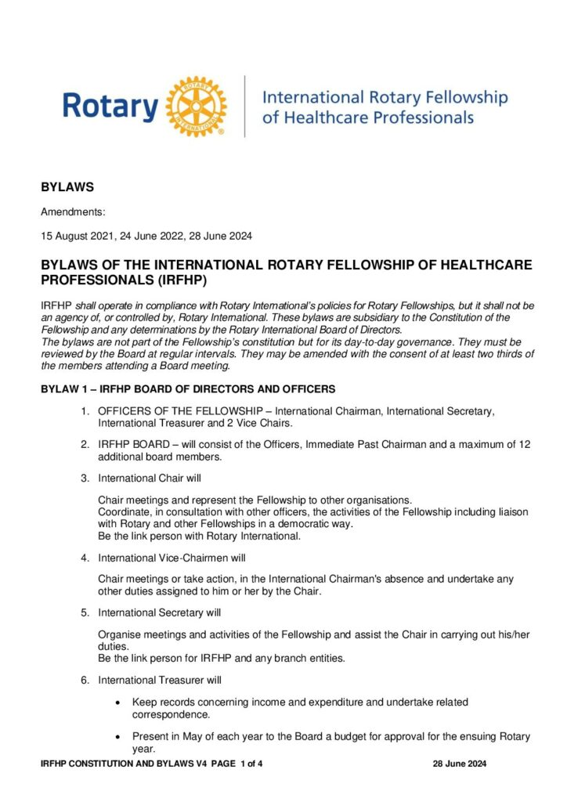
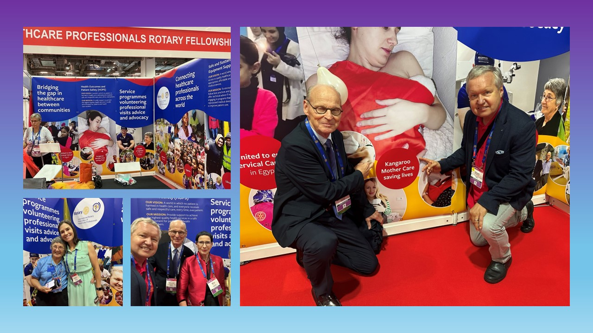

Home / About us
Healthcare Professionals united by the ideal of ‘service above self’. We are a global family. Our full name is the International Rotary Fellowship of Healthcare Professionals (IRFHP)


We operate in compliance with the Rotary International’s policies for Rotary Fellowships, but we are not be an agency of, or controlled by, Rotary International.
We recognises that in fulfilling our mission we must adopt a policy of ‘global thinking and local action’. We have three active branches
We’ve two subgroups